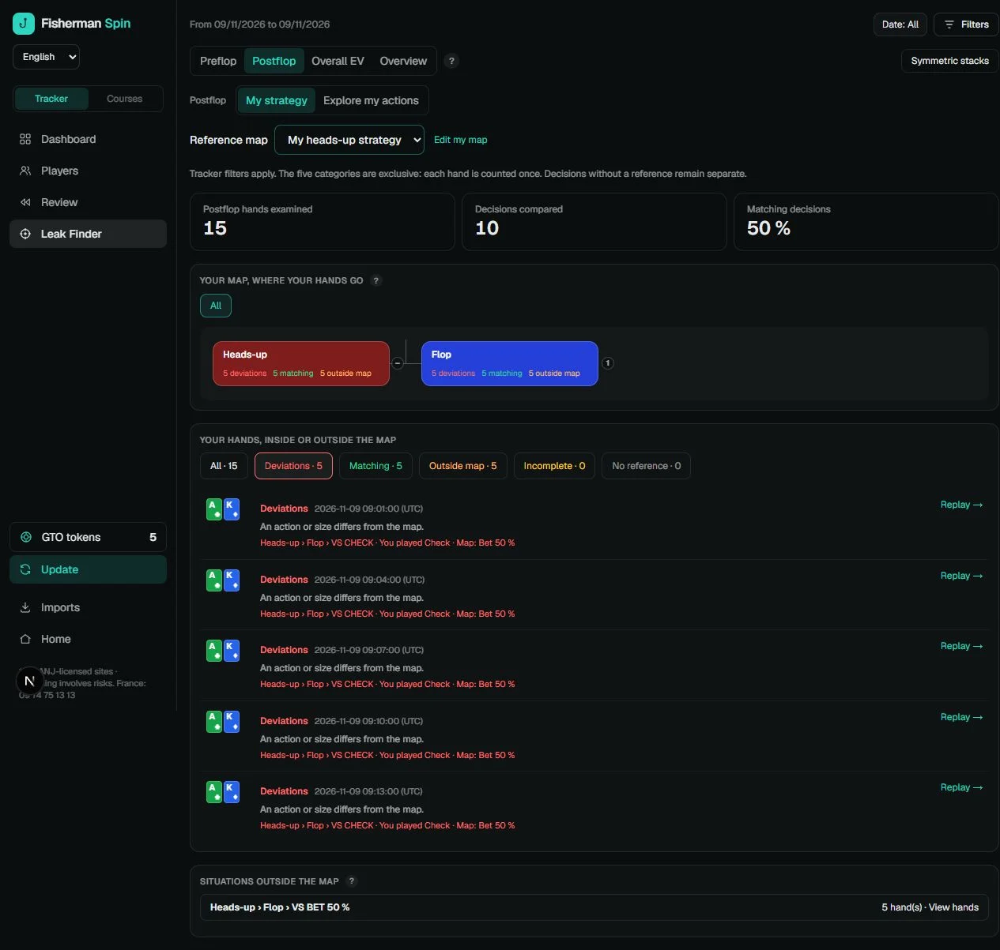

Your first session
From installation to your first exercise.
You need Windows 10 or 11, 64-bit, and a supported EUR hand-history export. Start with a small completed session while your regional format is being validated.
Check your format and install.
Read the compatibility scope, then download pilot 0.2.18 from the official download page. Close Fisherman before updating. If you already use it, export a backup from Imports before trying a pilot build.
Download for WindowsChoose English and create your account.
Select English in the language selector. Open Tracker → Account and follow registration or sign-in. The 14-day Complete trial starts at account creation; no card is needed. Language changes keep your hands and references.
Import one completed session.
Open Tracker → Imports. Choose the folder where your room saves its histories, or choose the exported session files. Fisherman reads those local files; it does not retrieve missing hands from the room. Betclic ZIP exports are accepted.
For Winamax, use the original Expresso history files. For Unibet, use the exported histories. The pilot supports EUR amounts only. If no hands appear, check that the room actually wrote the histories and tell us the regional client and file type.
Compare the totals.
Check the number of Spins, buy-ins, fees and net results against the room’s session summary. Keep the original files. If a value differs, report the mismatch before importing your whole archive.
Add one reference.
Open Training → My ranges or My strategy maps. Add a strategy you want to practise. For a postflop map, specify the situation, action and bet size. Start with one common heads-up spot.
A hand without a usable reference cannot be labelled as matching your strategy. Your custom map names, notes and player names are preserved as you wrote them.
Explore Postflop.
Open Leak Finder → Postflop → My strategy. Choose your reference map and explore deviations, matching hands and situations outside the map. Incomplete references remain separate. Use Replay to understand a hand.

Play Find the Leak.
Open Training → Find the Leak. Choose preflop ranges, postflop maps or a mix. A round uses completed Spins covered by your references and may contain fewer than ten questions. Choose an action, read the reference-based correction, then open the replayer if needed.
If no questions appear, add a reference that matches your imported hands. These comparisons reflect your own strategy; they are not a live recommendation.
Send your first feedback.
Tell us your room, regional client, currency, Windows version and where you got stuck. A description or a screenshot with private details removed is enough for a first report. Do not send account passwords or payment information.
Share my feedbackAll screenshots use illustrative sample data.